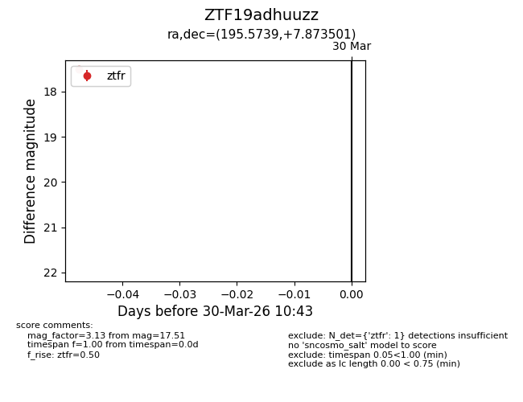
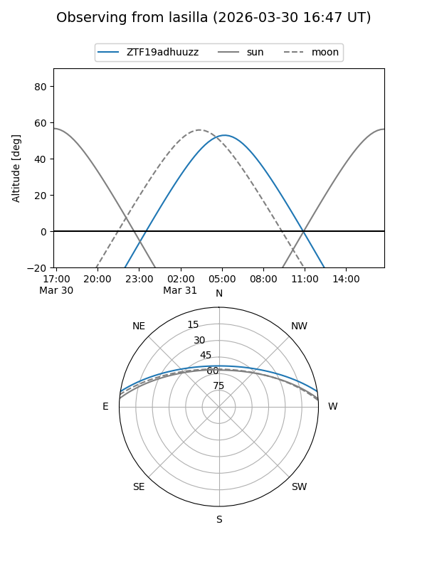
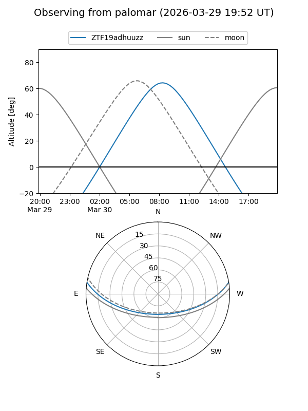

ZTF19adhuuzz
Target ZTF19adhuuzz at 2026-03-30 10:46
Aliases and brokers:
FINK: link
Lasair: link
ALeRCE: link
alt names
ZTF19adhuuzz (ztf,fink_ztf)
Coordinates:
equatorial (ra, dec) = 195.5739,+7.87350
equatorial (HMS+DMS) = 13:02:17.74,+07:52:24.60
galactic (l, b) = (311.0406,+70.57411)
Flags:
Photometry:
last ztfr=17.51
1 ztfr detections
Lightcurve

Visibility


Additional plots